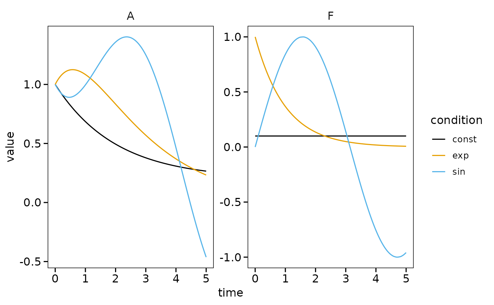

Generates and compiles the code of an ODE system and, as requested, of the
first- and second-order sensitivities and the adjoint. Xs() or Xf() turn
the result into a prediction function.
Usage
odemodel(
f,
deriv = TRUE,
deriv2 = FALSE,
derivMode = "forward",
forcings = NULL,
events = NULL,
fixed = NULL,
modelname = "odemodel",
backend = c("cppDE", "Sundials", "deSolve"),
verbose = FALSE,
outdir = .dmodOutdir(),
...
)Arguments
- f
Named character vector, eqnvec or eqnlist with the right-hand sides; the names are the states. The functions and operators an equation may use are listed in cppDE::expressions.
- deriv
logical, build first-order sensitivities. Default
TRUE.FALSEbuilds the states alone, forXf(), andderivModehas no effect.- deriv2
logical, build second-order sensitivities. Default
FALSE.TRUEis the same as adding"forward-forward"toderivMode, needsbackend = "cppDE"and impliesderiv = TRUE.- derivMode
character, the derivative directions to build, one or more of:
"forward"(default): sensitivity equations.deriv = TRUEbuilds them also whenderivModeleaves out"forward"."reverse": adjoint gradient, needed forobj(..., sweep = "reverse"). Not available onbackend = "deSolve"."forward-forward": second-order sensitivities."forward-reverse": adjoint Hessian, needed forobj(..., sweep = "reverse", deriv2 = TRUE).backend = "cppDE"only.
Each direction is compiled separately.
- forcings
character, the names of the forcings in
f. DefaultNULL. Their data are given toXs()orXf().- events
an eventlist, or a
data.frameaccepted byas.eventlist(). DefaultNULL. Events defined here also act on the sensitivities and the adjoint.- fixed
character, the initial values and parameters without sensitivities. Default
NULL.- modelname
character, the base name of the generated files and symbols. Default
"odemodel". Files of the same name inoutdirare overwritten.- backend
"cppDE"(default),"Sundials"or"deSolve": the integrators of cppDE, CVODE(S) through cppDE, or deSolve through cOde.- verbose
logical, print the compiler output. Default
FALSE. Not used withbackend = "deSolve".- outdir
directory for the generated sources and shared objects. Default
getOption("dMod2.outdir"), else the working directory.backend = "deSolve"writes to the working directory only; any otheroutdir, also one set by the option, is an error.- ...
Passed to
cppDE::cppODE(),cppDE::cvode()orcOde::funC(), according tobackend. Among them:method: the integration method,"bdf"(default),"adams","rb4"or"tsit5"oncppDE;"bdf"or"adams"onSundials. OndeSolveit isoptions$methodofXs()instead.rootfunc:"equilibrate"or expressions whose roots end the integration (cppDE,Sundials).includeTimeZero: integrate from 0 rather than from the first requested time, defaultTRUE.sparse: sparse or dense linear algebra,NULLchooses from the Jacobian (cppDE,Sundials).stepTrace: record per-step diagnostics, seetraceFileinXs()(cppDE,Sundials).compile: defaultTRUE.FALSEwrites the sources only;compile()builds them later.estimate,outputs,gridpoints: the parameters with sensitivities, additional outputs and spline nodes of the forcings (deSolve).
Value
An object of class odemodel: a list with the compiled objects
func (states), extended (first-order sensitivities), and on
cppDE / Sundials extended2 (second order) and reversed,
reversed2 (adjoints), each NULL where not built. The attribute
"compileInfo" holds the sources and compiler flags compile() uses.
Examples
# \donttest{
## A model with a forcing F, no sensitivities for "switch"
f <- eqnvec(A = "-k*A + switch*F")
model <- odemodel(f, forcings = "F", fixed = "switch", modelname = "odemodel_F",
outdir = tempdir(), compile = FALSE)
print(model)
#> dMod odemodel
#> Backend: cppDE [bdf]
#> Model: odemodel_F
#> Sens1: odemodel_F_s
#> Sens2: not compiled (deriv2 = FALSE)
#>
#> Equations:
#> Idx Inner <- Outer
#> 1 A <- -k*A+switch*F
#>
#> States:
#> [1] "A"
#>
#> Parameters:
#> [1] "k" "switch"
#>
#> Forcings:
#> [1] "F"
## The same model from an equation list
f2 <- addReaction(NULL, from = "", to = "A", rate = "switch*F", description = "production")
f2 <- addReaction(f2, from = "A", to = "", rate = "k*A", description = "degradation")
print(f2)
#>
#> Check Educt -> Product Rate Description
#> 1 -> A switch*F production
#> 2 A -> k*A degradation
model2 <- odemodel(f2, forcings = "F", fixed = "switch", modelname = "odemodel_F2",
outdir = tempdir(), compile = FALSE)
## One prediction per forcing; the data of each forcing cover the time range
tF <- seq(0, 5, 0.1)
x <- Xs(model, data.frame(name = "F", time = tF, value = sin(tF)), condition = "sin") +
Xs(model, data.frame(name = "F", time = tF, value = exp(-tF)), condition = "exp")
x2 <- Xs(model2, data.frame(name = "F", time = c(0, 5), value = 0.1), condition = "const")
## Compile both models into one shared object
compile(x, x2, output = "odemodel_ex")
#> using C++ compiler: g++
#> every source : -O2 -DNDEBUG -w -fPIC
#> 4 of 4 also : -fopenmp
pars <- c(A = 1, k = 0.5, switch = 1)
plot((x + x2)(seq(0, 5, 0.01), pars))

# }